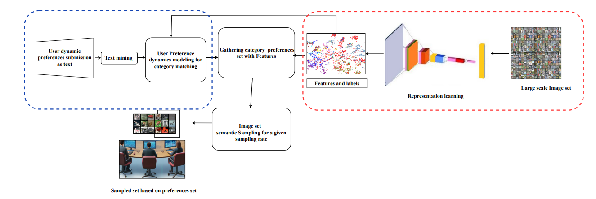

Email | LinkedIn | Portfolio | QUT Profile | ResearchGate | Google Scholar
I am a Data Science Leader and Principal Data Modeller at Queensland Treasury, driving data-informed policy, financial governance, and compliance automation. My expertise bridges data science, machine learning, predictive analytics, and government analytics, with proven experience in AI at scale on sensitive government data through the responsible and ethical use of AI, underpinned by strong governance knowledge. I have delivered solutions across multiple technical platforms including Azure, DevOps, Synapse, Databricks, Power BI, SQL, and SAP HANA.
I specialize in building scalable data solutions, integrating machine learning models, and driving data-driven policy insights. My work involves translating complex datasets into actionable intelligence, supporting policy decisions, and ensuring data integrity in enterprise-scale systems. I thrive in solving complex data challenges, collaborating across teams, and creating solutions that enhance efficiency, compliance, and policy effectiveness. I also bring proven expertise in rule-based AI model development at scale on sensitive big data.
With a PhD in Computer Vision (awarded Best PhD Thesis in Kerala and ranked 4th best in India, 2020), I transitioned from an accomplished academic career to become a trusted technical leader in government analytics. My journey spans postdoctoral research at INRIA (French National Institute for Research in Digital Science and Technology), AI-driven defence projects at QUT with the Dept of Defence, and leadership in machine learning–powered compliance automation at QRO.
I have also been recognised by the Australian Government through the prestigious Global Talent Visa program, awarded for an internationally distinguished record of exceptional professional achievements and contributions to the data science community.
Designed and implemented the first machine learning–driven compliance model in the department for a major Home Exemption scheme, leveraging multi-agency historical data and advanced feature engineering. The solution achieved an impressive 98% accuracy in predicting and validating exemption claims, significantly improving the efficiency of compliance checks. This initiative was highly recognised by leadership as a breakthrough in applying AI for compliance analytics inside the organization, demonstrating how data science can drive fairness, transparency, and automation in regulatory processes. Due to the confidential nature of government compliance data, further details on methodology and datasets are not disclosed, but the project highlights the transformative role of AI in public sector governance.
My role included building the proof-of-concept, collaborating with stakeholders to gather requirements, and presenting results to leadership. I also developed Natural Language Processing (NLP) bulk solution pipelines to process data from over a bulk number of confidential SharePoint case folders, extracting insights from more than 29,000 official PDF and Word files.
Low-Cost Cognitive Electronic Warfare (C-EW) System – A $1.5M Defence research project focused on developing advanced deep learning and cognitive AI systems for next-generation electronic warfare. I contributed both as a developer and project manager, leading algorithm design and prototyping, managing research objectives, coordinating with chief investigators, and mentoring junior researchers. My role also covered executive reporting, stakeholder engagement, and milestone delivery, ensuring technical progress aligned with strategic Defence goals. I represented the project team at international forums, including the Eurosatory Conference in Paris, showcasing its innovation in applied AI for Defence. Due to the classified nature of datasets and development details, further specifics cannot be disclosed, but the project demonstrated how deep learning and cognitive AI systems can transform electronic warfare capabilities.
As an AI & Data Consultant with strong foundations in GenAI, data platforms, and domain-driven problem solving, I built a Retrieval-Augmented Generation (RAG) chatbot that can answer questions from large documents such as Wikipedia articles or Organization reports/Policy documents. This project demonstrates my ability to combine LangChain, FAISS, and Hugging Face embeddings with advanced LLMs like FLAN-T5-large to deliver accurate, context-grounded insights.
Data Repurposing (DARE) Project – A two-year French Govt funded research and development initiative developing new compression paradigms for large-scale image and video databases. [Project Report] | [DARE Team Members]
As a Postdoctoral Fellow and Project Manager, I coordinated research delivery, liaised with multiple stakeholders, and ensured strategic alignment. This role gave me deep experience in international project management, cross-cultural collaboration, and delivery of high-impact outcomes.
Led the development of a Databricks-based data pipeline to convert unstructured legal trust deeds into structured, queryable data. This project demonstrated how Delta Lake, Spark SQL, and NLP pipelines can extract key clauses, parties, and compliance indicators from thousands of legal documents.
The solution enabled automated compliance checks, improved audit readiness, and allowed treasury/legal teams to run analytics on previously inaccessible data. It highlights my expertise in combining cloud-scale data engineering with AI-driven document intelligence to solve real-world regulatory problems.
Designed a large-scale Spark NLP pipeline to extract structured insights from over 29,000 PDF and Word files contained in 4000+ confidential SharePoint case folders. These documents represented notices of registration for charitable institutions, containing critical compliance and governance information.
Using Databricks and Spark NLP, I developed an automated workflow to extract and standardize key fields such as registration details, dates, and entity names. This project accelerated compliance auditing, enabled faster data-driven policy decisions, and showcased my ability to operationalize AI at scale on sensitive government data.
This work is part of Generative AI , showcasing innovation in embeddings, semantic similarity, and user-preference modeling. I developed a semantic similarity embedding and sampling algorithm for large-scale image datasets that dynamically integrates user preferences with representation learning. By leveraging cosine similarity and transfer learning from nine pre-trained models (ResNet, DenseNet, EfficientNet, MobileNet, Xception), the system enables personalized visual search and efficient semantic sampling. Experiments on the COCO dataset highlight how transfer learning and user-centric weighting can drive accurate semantic search and efficient resource utilization.
This project combined Queensland Building Footprints with satellite imagery to identify residential buildings located within farmland by analysing the surrounding greenery. Using vegetation indices such as NDVI, the workflow distinguished farmland areas with high vegetation cover from non-farmland residential zones, enabling classification of buildings based on their land context. The approach provided an efficient, scalable method to validate land use patterns, improve compliance monitoring, and support evidence-based decision making for planning and revenue assurance. The project was implemented with a sample dataset, demonstrating its potential to detect misclassified properties and strengthen policy enforcement across Queensland.
This project developed a machine learning–driven model to forecast land valuations across Queensland by integrating historical sales data, cadastral boundaries, property attributes, and economic indicators. Using advanced regression and ensemble techniques, the model captured spatial, temporal, and market trends to predict future land values with higher accuracy than traditional valuation methods. The solution enables government and policy teams to anticipate revenue shifts, guide fair taxation, and support urban planning, ultimately improving transparency, efficiency, and compliance in the land valuation process. The project was implemented with a sample dataset, demonstrating the capability of regression models to estimate property values effectively.
This project built a machine learning model to predict bank loan eligibility by analysing applicant details such as income, credit history, employment type, loan amount, and collateral information. Using classification algorithms including Logistic Regression, Random Forests, and Gradient Boosting, the system identified key risk factors and generated accurate eligibility predictions. The model streamlined the loan approval process, reduced manual effort, and minimised default risks, enabling banks to make faster, data-driven lending decisions while improving customer experience and financial compliance. The project was implemented with a sample dataset, showcasing how classification models can effectively support credit risk assessment in real-world scenarios.
This project applied machine learning ensemble methods such as XGBoost, Random Forest, and Gradient Boosting to forecast transfer duty revenue by analysing historical transaction data, property attributes, and economic trends. The model captured complex patterns and provided more accurate revenue predictions than traditional methods, enabling fiscal planning, revenue assurance, and policy analysis. By enhancing foresight into revenue trends, the solution supports government agencies in strategic decision making and budget alignment. The project was implemented with a sample dataset, demonstrating the effectiveness of ML ensembles for financial forecasting.
This project developed an AI-based fraud detection system to identify suspicious transfer duty transactions by analysing attributes such as declared value, property type, transaction location, and payment patterns. Leveraging machine learning classification models, the system flagged high-risk cases with strong predictive accuracy, enabling early detection of fraudulent activity and supporting compliance teams in risk prioritisation. The approach improved operational efficiency, reduced financial leakage, and strengthened the governance framework for property tax administration. The project was implemented with a sample dataset, demonstrating the practical application of AI in fraud risk management.
My field of interest includes computer vision, signal processing, and AI-driven automation, with contributions to projects funded by the Australian Department of Defence, INRIA (France), QT and QUT. I have published my innovative findings and projects widely in IEEE, Springer, and Elsevier journals, with 165+ citations and an h-index of 6. Recognitions include:
See full list on Google Scholar.